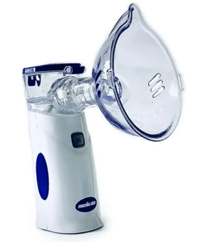

UNIX
Venha conhecer um pouco das novas tecnologias
Na Unix, nosso objetivo é transformar o cotidiano de hospitais, empresas, indústrias e lojas através da implementação de soluções inovadoras em Inteligência Artificial (IA) e Internet das Coisas (IoT). Acreditamos que a tecnologia tem o poder de otimizar processos, economizar tempo e melhorar a eficiência em diversos setores. Nosso compromisso é fornecer ferramentas que automatizam tarefas rotineiras e complexas, permitindo que os funcionários e médicos possam focar no que realmente importa: oferecer um atendimento de qualidade e tomar decisões estratégicas. Com nossas soluções, esperamos facilitar o trabalho diário, reduzindo a carga de tarefas manuais e minimizando erros humanos. Para os hospitais, nossas tecnologias visam melhorar a gestão hospitalar, desde o monitoramento de pacientes até a administração de recursos. Isso resulta em um ambiente mais organizado e eficiente, onde os profissionais de saúde podem dedicar mais tempo ao cuidado dos pacientes. Nas empresas e indústrias, nossas soluções de IA e IoT ajudam a automatizar processos produtivos, monitorar equipamentos em tempo real e prever manutenções necessárias. Isso não só aumenta a produtividade, mas também garante um ambiente de trabalho mais seguro e eficiente. Na UNIX, estamos comprometidos em levar inovação e eficiência a todos os nossos parceiros, ajudando-os a alcançar seus objetivos com mais rapidez e precisão. Junte-se a nós nessa jornada rumo a um futuro mais inteligente e automatizado.
SUSTENTABILIDADE AMBIENTAL
MONITOR DE GLICOSE

Monitor de Glicose Freestyle Libre - Fabricado pela
Abbott, este dispositivo permite a monitorização
contínua da glicose no sangue para diabéticos,
eliminando a necessidade de
picadas constantes
no dedo. Ele coleta dados e os envia para o
smartphone do paciente, ajudando a ajustar a dosagem
de insulina conforme necessário
Inaladores Conectados 
Inaladores Conectados - Utilizados no tratamento de
asma e DPOC, inaladores conectados monitoram o uso
do medicamento e
ajudam a identificar fatores
ambientais que desencadeiam crises. Eles são
fabricados por empresas como Propeller Health, que
proporciona controle mais preciso e prevenção de
emergências
BIBLIOGRAFIA
google.com / facebook.com / instagram.com / youtube.com